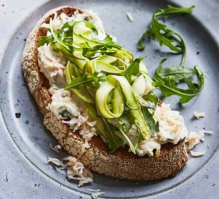

Crab Salad

Description
Shave asparagus into ribbons to top Tom Kerridge's crab on toast – it isn't something you see often and gives the dish a chef's touch. It makes a lovely starter
Ingredients
- 4 asparagus spears, woody ends trimmed
- 1 lemon, zested and juiced
- 2 tbsp olive oil
- small handful flat-leaf parsley leaves, chopped
- 1 tbsp capers, drained and chopped
- 1 small gherkin, chopped
- 6 tbsp good-quality thick mayonnaise
- 200g white crabmeat
- 4 small slices of sourdough
- 4 small handfuls rocket (about 50g)
Steps
- Use a swivel blade peeler to shave the asparagus into ribbons. Put in a bowl and season with salt and pepper, then dress with the lemon juice and olive oil and set aside.
- Mix the parsley, capers, gherkin and lemon zest into the mayonnaise in a small bowl, then gently fold through the crabmeat. Toast or griddle the sourdough and top with the crab mixture. Toss the rocket in with the asparagus and top each crab toast with a tangle of the asparagus salad. Season with flaky sea salt and serve.